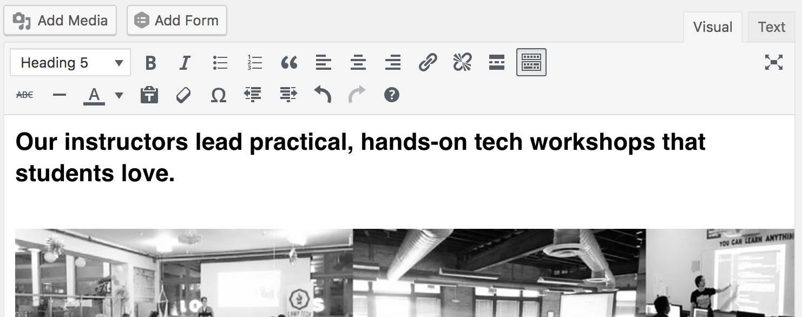
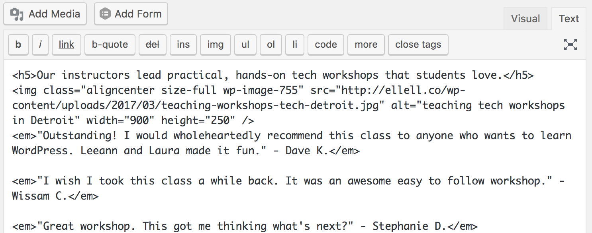
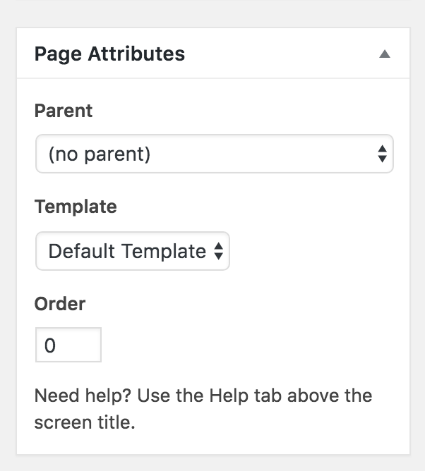

What is a Website?
A website is a collection of folders (directories) and files (documents) that are accessible online.
For our website to be accessible online, we need those folders and files to live on a computer that is always online.
These computers are called servers.
When you buy a web hosting plan, you are buying space on a server for your website (folders + files) to live.
Domain Name
The domain name is the address at which people can find your website.
Example: http://grandcircus.co
Example: http://google.com
Publish a Page
Dashboard > Pages > Add New
Publishing a Page: First Steps
- Give your page a title.
- Type your page's content into the editor.
Publishing a Page: Getting Fancy
- Format your text: italicize, bold.
Publishing a Page: Getting Fancy
Publishing a Page: Getting Fancy
Note: While the editor does allow you to change the text color, I don't recommend doing so there! Text color, font, and other aesthetic options should be handled by your WordPress theme.
Publishing a Page: Visual Editor

What you see is [close to] what you get
Publishing a Page: Text Editor

The HTML behind the scenes
Publishing a Page: Adding Images
Use the "Add Media" button above the text editor.
The placement of your cursor matters!
Publishing a Page: Image Options
- Caption: will usually display on your page (depending on your theme)
- Alt text: description of image, important for accessibility and SEO
- Description: Displays on the attachment page
- Link to: whatever you want!
- Size: WordPress generates multiple sizes of each image you upload
Publishing a Page: Last Steps
- Preview your page
- Does everything look good?
- Test your links!
Publishing a Page: Last Steps
Check your Page Attributes
- Parent
- Template (theme-dependent)
- Order

Publishing a Page: Last Steps
Add a Featured Image?
The featured image will be the image associated with this page.
Publishing a Page: Last Steps
Check the Permalink
Publishing a Page: Actually Publishing
Finally!
You can also save as draft, to edit later.
Publishing a Page: View Your New Page!
Your page is now live on your site! Woohoo!
...but it's not going to be very easy to find unless it's linked. We'll get to that soon!
Navigation Menus
Menus help us find important pages on a website
Menus data is hierarchical
You can have more than one
Use menus in header, sidebars, footers, etc.
Create a Menu
Appearance > Menus
Create a Menu
- Your menu needs a name.
- Add pages, posts, categories, or links to the menu.
Create a Menu
Drag & drop to reorder them, or even create sub-items
Create a Menu
Click the arrow on the right-hand side of the menu item to expand it and see further options.
Tip: Check the screen options for more fields